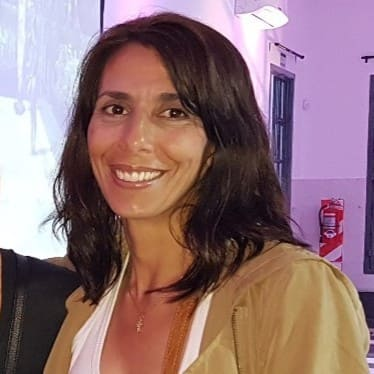
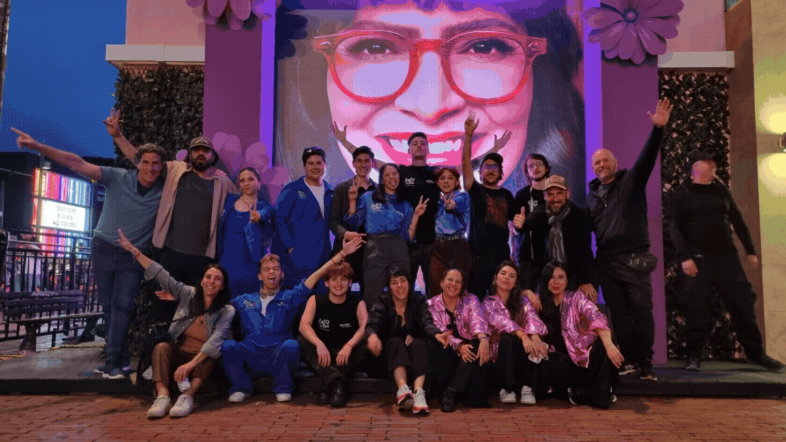

01 / Nosotros
No hacemos eventos.
Creamos experiencias.
Transformamos ideas en experiencias reales que conectan marcas y personas de una manera creativa, cercana y memorable.
Quiénes somos
Somos una agencia de Brand Experience especializada en diseñar, producir y ejecutar acciones que hacen saltar a las marcas.
Pensamos cada proyecto de forma integral: desde la estrategia y el concepto hasta la producción y el encuentro con el público. Trabajamos para crear momentos relevantes, coherentes y capaces de permanecer en la memoria.
Equipo
Personas que hacen
que las cosas pasen.

MAGDALENA CALUMI
Fundadora y directora de SALT.ar
“En 2021, Magdalena Calumi fundó SALT.ar con la convicción de crear algo diferente: una agencia capaz de transformar ideas en experiencias que conectan marcas con personas. El camino comenzó con esfuerzo, creatividad y compromiso, pero también con la incertidumbre propia de animarse a emprender. Fue necesario arriesgarse, confiar en una visión y dar el salto. Hoy, esa misma energía impulsa cada proyecto de SALT.ar: convertir desafíos en oportunidades y hacer que las cosas pasen.”
Nuestro equipo
El staff siempre
presente
Detrás de cada experiencia hay un equipo comprometido que transforma las ideas en realidad. Nuestro staff acompaña cada proyecto con energía, profesionalismo y atención en cada detalle.

Hagamos equipo
¿Creamos algo
juntos?
Contanos qué tenés en mente y hagamos saltar la próxima idea.
Hablemos